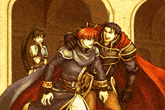
火焰纹章 烈火之剑
火花 × 狼组汉化版全文本
文本出自火花 × 狼组汉化版，仅供查阅参考，版权归原作及汉化组所有。右下角可切换到「堇天修正 v0.9」：采用 堇天《狼组•火花汉化版错译盘点》 的修正译文替换原版中的错译。
琳篇
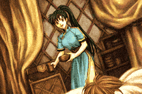
序章草原的少女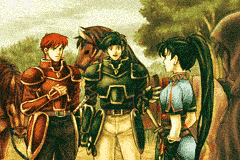
第1章命运的脚步声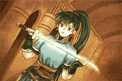
第2章精灵之剑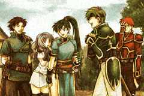
第3章小小的佣兵团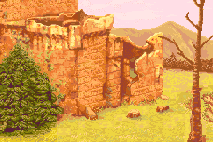
第4章生计下的阴影- 第5章穿越国境
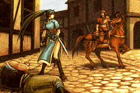
第6章自豪的血统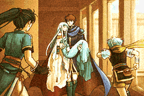
第7章旅行的姐弟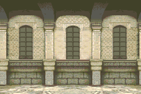
第7章外传黑影- 第8章谋略的漩涡
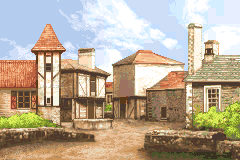
第9章悲伤的再会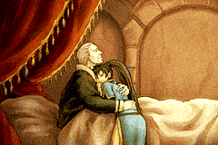
第10章遥远的草原
艾利乌德篇・赫克托耳篇
- 第11章（艾利乌德篇）旅行开始
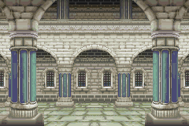
第11章（赫克托耳篇）另一个旅程- 第12章比翼之友
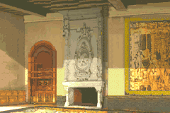
第13章寻求真实- 第13章外传商人马利纳斯
- 第14章蠢蠢欲动的家伙们
- 第15章（赫克托耳篇限定）飞降的钩爪
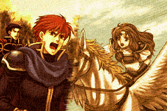
艾15章・赫16章基亚兰的公女- 艾16章・赫17章谜一般的行踪
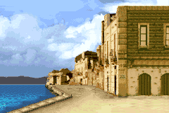
艾16章外传・赫17章外传港镇巴顿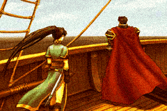
艾17章・赫18章海盗船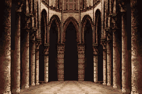
艾18章・赫19章魔之岛- 艾18章外传・赫19章外传封魔者
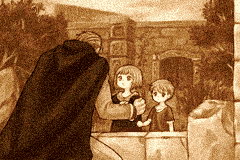
赫19章异传（赫克托耳篇限定）时间的狭缝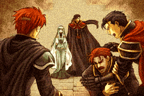
艾19章・赫20章龙之门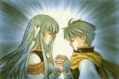
艾20章・赫21章新的决意- 艾21章・赫22章两个羁绊
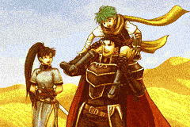
艾22章・赫23章活生生的传说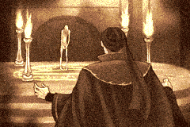
艾22章外传・赫23章外传制造的生命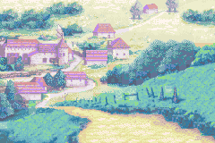
艾23章・赫24章四牙袭来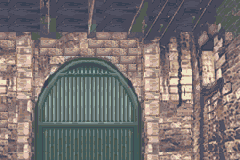
赫25章（赫克托耳篇限定）疯狂的野兽- 艾24章・赫26章难以传达的心意
- 艾25章・赫27章黑暗的白花
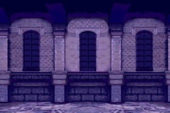
艾26章・赫28章黎明前的攻防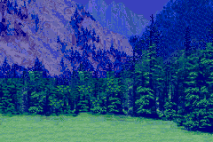
艾26章外传・赫28章外传决别之夜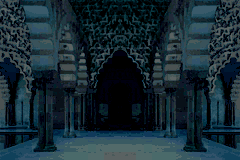
艾27章・赫29章命运的齿轮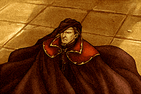
艾28章（艾利乌德篇限定）勇者罗兰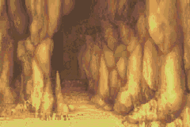
赫30章（赫克托耳篇限定）狂战士迪鲁汉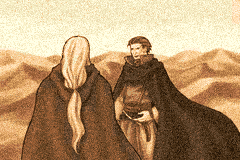
艾29章・赫31章悠久的黄沙- 艾29章外传・赫31章外传战斗准备
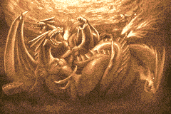
艾30章・赫32章背水一战- 赫32章外传（赫克托耳篇限定）生存的价值
- 终章光
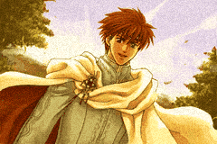
结局与后日谈结局与后日谈
阅读说明
章号中「艾」指艾利乌德篇、「赫」指赫克托耳篇。标有【艾利乌德篇】【赫克托耳篇】的段落只在对应篇章出现；标有【分支】的段落是条件分支，同一分支的几种情况游戏中只会出现一种。
每段开头的 #编号 是游戏内文本编号，可以用来精确定位和引用。